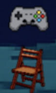
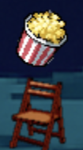

Benötigte Teile:
- ESP32
- Button v1.2
- Grove_LED
- Weight Sensor
- 3x Kabel
- Micro-USB-Kabel
Und natürlich: Einen Stuhl den du transformieren willst
ESP32-Setup:
- Starte indem du den Button v1.2 mit einem Kabel verbindest. Dieses Kabel verbindest du dann mit dem IO14 Eingang deines ESP's.
- Danach verbindest du deine Grove LED mit einem Kabel, welches du in den Eingang daneben, dem IO26 Eingang steckst.
- Dein letztes Kabel verbindest du mit dem Weight Sensor, diese Kabel wird in den IO33 Eingang, links von dem LED Eingang, gesteckt.
- Dein ESP32 ist jetzt fertig, er braucht nur noch den Code und dann läuft er schon!
ESP32-Code:
Nun muss der ganze Code, welcher in diesem Repository unter friendchair liegt, auf den ESP32 drauf. Verbinde dafür dein Micro-USB Kabel mit dem ESP32 und die andere Seite mit deinem Computer.
Im Terminal musst du nun in den Friend's Chair ordner navigieren, dafür gibst du folgendes ein:
cd friendchair
Das Terminal sollte dann ungefähr so aussehen:
.../iot-2025-08/friendchair (main) $
Um nun per platformio den Code auf den ESP zu pushen musst du folgenden Befehl eingeben:
pio run --target upload
Wenn das geklappt hat, sollte es ungefähr so aussehen:
...
Writing at 0x00095660... (61 %)
Writing at 0x0009a929... (64 %)
Writing at 0x0009fd70... (67 %)
Writing at 0x000a527d... (70 %)
Writing at 0x000aaa17... (73 %)
Writing at 0x000b018a... (76 %)
Writing at 0x000b5fa9... (79 %)
Writing at 0x000bba78... (82 %)
Writing at 0x000c1565... (85 %)
Writing at 0x000c9a6f... (88 %)
Writing at 0x000d200a... (91 %)
Writing at 0x000d7173... (94 %)
Writing at 0x000dcc93... (97 %)
Writing at 0x000e2307... (100 %)
Wrote 875840 bytes (551012 compressed) at 0x00010000 in 14.3 seconds (effective 491.5 kbit/s)...
Hash of data verified.
Leaving...
Hard resetting via RTS pin...
================== [SUCCESS] Took 32.14 seconds ==================
Super, jetzt bist du schon fast fertig!
Um überprüfen zu können ob der Code funktioniert, gib folgendes im Terminal ein:
pio device monitor
Dies öffnet den Serial Monitor und du solltest nun Output sehen, den der ESP32 sendet. Da der ESP32 über WLAN kommuniziert, müssen wir das noch einrichten. Öffne auf deinem Handy deine WLAN-Einstellungen. Suche nach einem Gerät, welches ESP32_01 oder 02 heißt. Klicke darauf und es sollte sich automatisch eine Seite auf deinem Handy öffnen. Hier musst du nun dein lokales WLAN auswählen und das Passwort eingeben. Wenn du das erfolgreich gemacht hast, schließt sich dieses Fenster automatisch.
Installation am Stuhl:
Als letzten Schritt muss du nur noch dein ESP32 an deinem gewünschten Stuhl anbringen. Wie du das machst ist dir selbst überlassen, aber wir haben eine Empfehlung wie wir es machen würden:
- Wähle eine deiner Armlehnen deines Stuhls aus
- Befestige den ESP32 daneben, also in Richtung vom Stuhl weg
- Den Button und die LED kannst du nun oberhalb deiner Armlehne befestigen, sodass sie dort schnell zu erreichen sind
- Das Kabel mit dem Gewichtssensor führst du die Armlehne entlang nach unten und legst den Sensor auf deinen Stuhl
So funktioniert's:
Sobald du dich auf deinen Friend's Chair setzt, erscheint auf der digitalen Lagerfeuer-Website deine Stuhl-Repräsentation und das gemeinsame Lagerfeuer brennt auf.
Verschiedene Aktivitäts-Modi:
-
Buch-Symbol: Du suchst einfach nur Nähe, bist aber gerade beschäftigt oder brauchst Ruhe
-
Musik-Symbol: Du hast Lust, gemeinsam Musik zu hören oder zu machen
-

Gaming-Symbol: Du möchtest zusammen Computerspiele spielen
-

Popcorn-Symbol: Du willst eine gemeinsame Watchparty starten
Die Symbole steuerst du ganz einfach mit dem Button an deinem Stuhl. Wählen beide Freund:innen das Popcorn-Symbol, fährt automatisch eine digitale Leinwand herunter und ihr könnt einen YouTube-Link teilen. Das Video startet synchron auf beiden Seiten und pausiert automatisch, wenn einer von euch aufsteht!